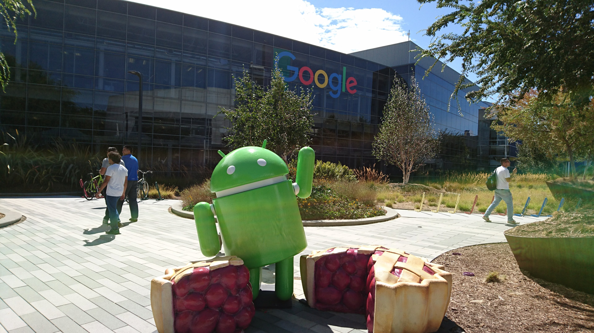
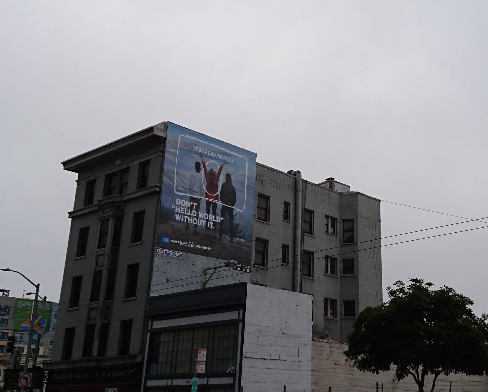
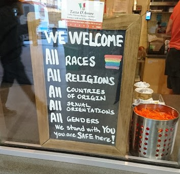
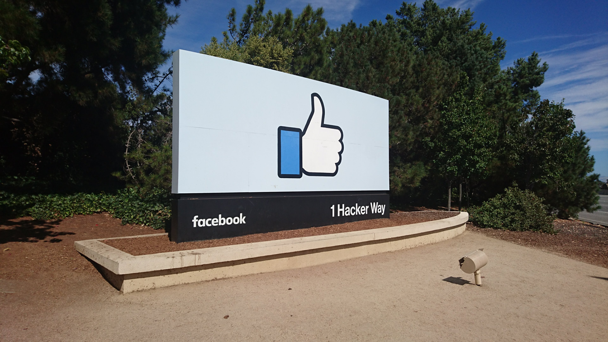

A Bay Area é uma área conurbada que engloba várias pequenas cidades e ficou conhecido como "Vale do Silício" pelo protagonismo global das grandes empresas instaladas nessa região como Netflix, Google, Facebook, IBM, Twitter, Apple e afins.

É dito que boa parte dos habitantes da Bay Area são software engineer (desenvolvedores ou analistas de sistemas como conhecemos no Brasil) e caso essa região fosse um país, é estimado que seria um dos maiores PIBs do mundo. Imagina-se então a tamanha importância dessa região.
Diferentemente de qualquer outro lugar no mundo, os grandes outdoors de propagandas servem para divulgar frameworks, softwares de gestão, banco de dados etc. como Jenkins e Neo4j.
 Propaganda da American Express escrito 'Don't Hello World without it'
Carros elétricos, últimas versões do Tesla, carros autônomos e pessoas a caminho do trabalho em patinetes são cenas comuns ao caminhar pelas ruas. Para aqueles que querem ter a própria empresa, é o lugar onde tudo acontece: Há investidores com muita grana disponível, até mesmo para injetar milhões de doláres em alguma loucura envolvendo a exploração de Marte.
Além da maioria das pessoas estarem envolvidas com tecnologia, muitos são imigrantes. É raro encontrar alguém natural dessa região. As bandeiras LGBT enfatizam não somente a luta LGBT mas também a enaltação das diversidades e o respeito independente do gênero, nacionalidade, diferenças culturais etc.

Muito além de uma luta de direitos humanos, essa luta pela diversidade é um dos fatores mais importantes falando de negócios: Qualquer startup já é fundada pensando em ser um grande sucesso global logo de ínicio, para atingir isso é necessário pessoas de todos os tipos. Por exemplo, uma chinesa conhece melhor os fatores cuturais para vender algo na China do que um brasileiro e uma mulher saberá melhor quais suas necessidades num produto voltado para o público feminino do que um homem. É preciso que seu negócio consiga impactar qualquer tipo pessoa.
Em consequência a essa promoção de igualdades, a California é um dos estados mais progressistas nos Estados Unidos e até mesmo já legalizou o uso medicinal da maconha.
Como num episódio de black mirror nos sentimos no futuro e também vemos uma outra realidade: Moradores de rua por todos os cantos e uma luta por moradia. Uma região tão rica, possui aluguéis caros e é comum esbarrar com barracas nas calçadas, onde moram pessoas que trabalham.
Além disso, as relações de trabalho nessa região são cada vez mais flexíveis como a possibilidade de trabalhar home office, vídeo games disponíveis, academia, refeições gratuitas e outros "mimos" que nos causam inveja. É o trabalho do sonho de todos: bom salário alinhado com uma possível qualidade de vida.

Trabalho dos sonhos no qual todo mundo é bem pago e todos estão procurando a mesma casa. O que eleva os preços da cidade e a perca do poder de compra.
Diferentemente dos trabalhadores de telemarketing do Brasil, os quais usam fraudas para evitar idas ao banheiro, há todo esse lazer disponível no ambiente de trabalho. Ambientes que iludem qualquer pessoa fora da área ou as mais inexperientes.
Na maior parte das empresas, dificilmente conseguirá usufrir desse espaço por causa das datas de entrega impostas ou pressão, algumas tentam até mesmo vender um ambiente criativo em troca de salários baixos ou salários desiguais (por exemplo, homens recebendo mais que mulher para exercer a mesma função e com a mesma escolaridade). Ou no pior dos casos, o ambiente tenta esconder a falta de cultura da empresa, onde sexismo e assédio moral são práticas comuns.
Além disso, o trabalho dos sonhos também envolve uma rotina pesada: Numa versão americana do fluxo Osasco-São Paulo e Barueri-São Paulo, para se deslocar até o trabalho e casa é necessário enfrentar longas filas no trem ou pegar uma rodovia congestionada. Durante o trajeto, é comum encontrar pessoas trabalhando com o notebook e respondendo Slack e Hangouts fora do horário de trabalho.
O Vale é um lugar único e neste contexto em que a tecnologia é a principal ferramenta para agir no mundo, é preciso lembrar que somos os protagonistas dessa mudança mas continuamos sendo trabalhadores.